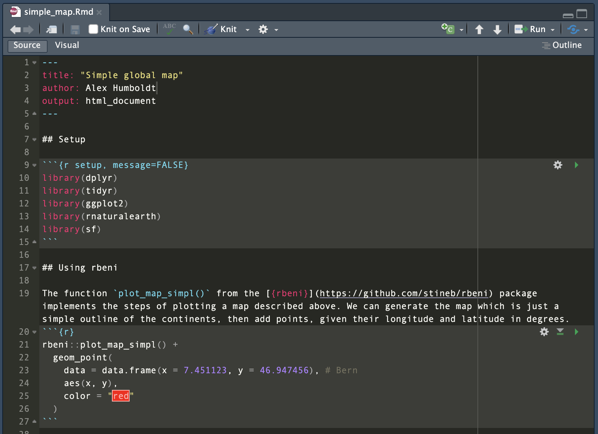
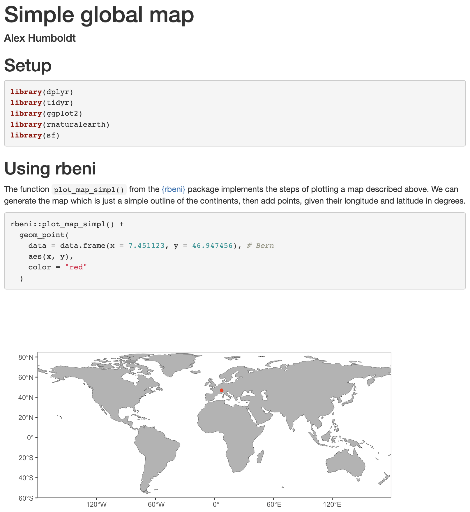
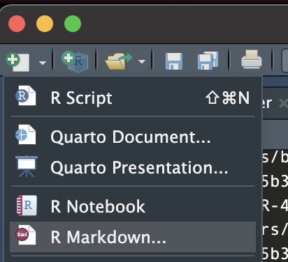

read_csv("/Users/alex/Desktop/data/file.csv")3 Reusable workflows
3.1 Learning objectives
You will learn to:
- know what it takes to make a workflow reproducible and code reusable
- apply principles and tools for a project-oriented workflow
3.2 Why reproducible?
Reproducibility is key for the scientific method. In traditional laboratory science, experiments are documented in detail so that other researchers can repeat the procedure and confirm the results. In data science, our “experiments” are often computational: data cleaning pipelines, statistical analyses, and fitting models. For these, our code becomes the lab notebook. If the code cannot be rerun reliably, the scientific claims it supports are weakened.
This is why reproducible code is central to computational research. Reproducibility means that given the same data and computing environment, someone else can re-run the analysis and arrive at the same outputs.
3.3 Why reusable?
Closely related to reproducibility of an analysis is the reusability of code. It extends the value of our work by making code adaptable to new datasets, questions, or projects. Together, these practices support the transparency, credibility, and progress of science. A common barrier to reproducibility is that code is often scattered across folders, dependent on hidden configuration files, or assumes local resources that others cannot access. These habits make our analyses fragile: they may work on our laptop today, but not tomorrow on a colleague’s machine—or even on our own machine six months later.
To address this, it is helpful to adopt a project-oriented workflow. In this approach, every analysis lives inside a clearly defined project directory that contains:
- The data (or instructions for obtaining it).
- The code needed to process, analyze, and visualize.
- The documentation explaining the workflow.
- The results generated (figures, tables, reports).
Two guiding principles are the basis for reusable code and project-oriented workflows:
- Self-contained: the project does not depend on hidden files or settings outside its own directory. Everything needed to rerun the analysis is either included in the project or explicitly documented.
- Portable: the project can be moved (e.g., shared via version control, sent as a zip file, or run on a server) and still work without modification.
By keeping projects self-contained and portable, we transform code from a collection of personal notes into a scientific artifact that others can confidently reuse, adapt, and extend. Reusable code is also the basis for Open Science (Chapter 5).
3.4 Practices for reusability
Below is a list that may serve as a key to making code re-usable.
3.4.1 Structure your project
Think of all files that are linked to a certain data science workflow as belonging together into one project. A project is therefore a directory that contains the code it uses and the outputs it produces. Different types of files go in different sub-directories of the project main directory, and are given descriptive names. It is important to keep a clear and general order to make your project directory and code useful and easily readable and navigatable for others and your future self (once you revisit old code months after you wrote it). To do so, always keep files of the same type in sub-directories that are always named the same way across projects. A common structure (with common file types per subdirectory) for R-based projects is:
my-project/
├── analysis/ # scripts that implement individual steps of the workflow (.R files)
├── data/ # processed data files, generated by the project's scripts (.csv, .rds, .nc, etc.)
├── data-raw/ # immutable data files, obtained from external sources. May also contain scripts to download them.
├── fig/ # figures, generated by the project's scripts (.pdf, .png)
├── R/ # function definitions (.R)
├── README # a text file that contains essential information about the project directory
├── src/ # shell scripts (.sh)
└── vignettes/ # reports (.Rmd)3.4.2 Separate tasks
Separate and encapsulate tasks into functions and scripts. Instead of long, monolithic scripts, break analyses into modular steps. Steps may have to follow a certain sequence as there may be dependencies between them. For example, a first step reads raw data from a file in data-raw and performs some data transformation. Especially if this data transformation is computationally intensive, its output should be written into a file (in data/), from which it is read again at the start of the second workflow step. To clarify such sequential dependencies and specify the order in which scripts are to be executed, it is good practice to provide numbers as script names. For example:
my-project/
└── analysis/
├── 01_transform_data.R
├── 02_fit_models.R
└── 03_create_plots.RA “main” script or notebook may be added that orchestrates the workflow (like a recipe) and runs individual scripts. It can serve as a clear entry point to reproducing your analysis – from original data to published figures – and makes it easy for others to run steps in the right order.
3.4.3 Document the project
3.4.3.1 The README file
The first entry point to working with a project directory is always the README file, located in the parent project directory. The README should answer “What is this project, what do I need to run it, and how do I use it?” Think of it as the “lab manual” for anyone opening the project for the first time (including your future self). For a reproducible and reusable data science project, a README should typically include:
Project Overview
- Title of the project.
- A short description of the purpose and what kind of analysis/modelling/visualisation it implements.
- A short description of the key outputs it generates (e.g., models, figures, reports).
Data
- Where the data, used as input to the project workflow, comes from (source, URL, citation).
- Instructions for accessing or downloading data (if not included in the repo). If applicable, refer to a data download script, located in
data-raw. - Clear statement if large data files are excluded from the repository. If so, and if such large data files are required but external to the repository, describe where they are located and explain that corresponding files may have to be downloaded by the user and which paths have to be adjusted in which script for pointing to these external data files.
Project structure
- A brief explanation of the folder layout (see Sec. Section 3.4.1).
- An explanation of what workflow step is implemented by what script.
- An explanation of key data files generated by individual workflow steps (scripts) and required by subsequent workflow steps.
How to reproduce the analysis
- Instructions for running the workflow end-to-end, specifying the sequence by which scripts are to be run. Ideally, this is reflected also by file names of scripts in subdirectory
analysis/(see Sec. Section 3.4.2). Alternatively, a main script can be added that runs the scripts for individual workflow steps in the right order. - Expected runtime or computational requirements.
Results
- Where to find generated results (reports, plots, models).
- Links to pre-rendered reports (e.g., HTML, PDF, Quarto).
Dependencies
- List of R packages (or other software) required.
- Recommended: include an environment management tool (e.g.,
renv.lockfile). - Any system dependencies (e.g., NetCDF, GDAL, Java).
Collaboration & reuse
- Licensing terms (e.g., MIT, GPL, CC-BY).
- How others can cite or acknowledge the project.
- Contact information or maintainer’s name.
Optional but useful extras
- Badges (build status, license, DOI, R-CMD-check).
- Changelog or release notes.
- References or background reading.
Format documentation
To ease readability of the README file, it is advised that it contains basic formatting, using Markdown. A Markdown-formatted can be interpreted as such when given the suffix .md. Hence, save it as README.md in top-level directory of your project.
Markdown formatting is specified on raw text and provides minimal but essential formatting options. Below is a Markdown “cheatsheet”, copied from www.markdownguide.org.
## Basic Syntax
These are the elements outlined in John Gruber’s original design document. All Markdown applications support these elements.
### Heading
# H1
## H2
### H3
### Bold
**bold text**
### Italic
*italicized text*
### Blockquote
> blockquote
### Ordered List
1. First item
2. Second item
3. Third item
### Unordered List
- First item
- Second item
- Third item
### Code
`code`
### Horizontal Rule
---
### Link
[Markdown Guide](https://www.markdownguide.org)
### Image

## Extended Syntax
These elements extend the basic syntax by adding additional features. Not all Markdown applications support these elements.
### Table
| Syntax | Description |
| ----------- | ----------- |
| Header | Title |
| Paragraph | Text |
### Fenced Code Block
{ “firstName”: “John”, “lastName”: “Smith”, “age”: 25 }
### Footnote
Here's a sentence with a footnote. [^1]
[^1]: This is the footnote.
### Heading ID
### My Great Heading {#custom-id}
### Definition List
term
: definition
### Strikethrough
~~The world is flat.~~
### Task List
- [x] Write the press release
- [ ] Update the website
- [ ] Contact the media
### Emoji
That is so funny! :joy:
(See also [Copying and Pasting Emoji](https://www.markdownguide.org/extended-syntax/#copying-and-pasting-emoji))
### Highlight
I need to highlight these ==very important words==.
### Subscript
H~2~O
### Superscript
X^2^3.4.3.2 Commenting
Use comments to describe in human-readable text what the code does. Comments are all that appears to the right of a # and are code parts that are not interpreted by R and not executed. Adding comments in the code greatly helps you and others to read your code, understand what it does, modify it, and resolve errors (bugs).
Here is a list of rules for good commenting (from here):
- Comments should not duplicate the code.
- Good comments do not excuse unclear code.
- Explain unidiomatic code in comments.
- Provide links to the original source of copied code.
- Include links to external references where they will be most helpful.
- Add comments when fixing bugs.
- Use comments to mark incomplete implementations.
3.4.3.3 File naming
Good file naming facilitates transparency, findability, and reusability. Hence, file naming matters. The following points should be considered (see also here):
- Include the type of a file’s content in its name (e.g.,
map_,df_for data frame,mod_for a model object, etc.) - Chose the right suffix for a given file format (e.g.,
.csv,.nc,.txt,.md) - If multiple versions of the file should be kept, give the file a date in the format
YYYYMMDDor give it a version number (e.g.,v1). - Avoid special characters (
()?\!@\*%{[<>) and spaces. - Use underscores (
_), not dots (except for the dot before the suffix). - Avoid uppercase.
- The file name should reflect the name of the object that was written into that file.
3.4.3.4 Executable documentation
Further documentation, e.g., of certain methods of the project, demonstrated on a reduced set of data, may be provided by RMarkdown files (or vignettes), contained in the subdirectory vignettes/. RMarkdown combines Markdown-formatted text with executable code, embedded in the text as code chunks. They can either be compiled (knitted) into an HTML or PDF output, where code chunks are executed upon compilation and visualization outputs are directly placed into the output, or they can be run like a script entirely or for each code chunk separately. When opened in RStudio, RMarkdown files appear in the Editor like this:

As shown in Figure 3.1, an RMarkdown file consists of a header that specifies the document properties, such as how it should be rendered (as an html page, a docx file or a pdf).
---
title: "Simple global map"
author: Alex Humboldt
output: html_document
---Below the header follow the contents as either text or code chunks.
Code chunks that contain executable R code are opened by a line ```{r}.
The document can be rendered by calling rmarkdown::render() on the command line or hitting the Knit button in the RStudio IDE. Depending on your settings a html file, pdf or docx file will be generated in your current directory (and or displayed in the IDE viewer). The RMarkdown source file shown in Figure 3.1 is rendered to:

Note that the code chunk produced a figure as an output which was placed directly in the rendered html. This demonstrates the usefulness of RMarkdown as notebooks to document entire workflows and make their outputs reproducible.
To create a new RMarkdown file, select from the drop-down menu in the top-left corner of RStudio as shown below:

3.4.4 Keep raw data immutable
All analyses start with one or more datasets that are obtained from external sources or compiled by the researcher. Such original data may be contained in the project, and is typically stored in the data-raw/ folder. These files must never be overwritten. Instead, generate derived data files and save them in data/. This preserves provenance of the data and makes it possible to restart analyses from scratch. Document the source of all original data by info added in the README file.
3.4.5 Use relative paths
… not absolute paths. The use of absolute paths, i.e., a path starting at the root of your local file system, is the enemy of portability. Since your collaborator’s file system and location of the project folder with most certainly not be the same as it is on your machine, the code will break. By using relative paths and read and write only from and to locations in your project directory, you make your code – the entire project – portable.
Bad practice with absolute path:
Good practice with relative path, using
here():read_csv(here("data", "file.csv"))
As an example, consider the following. RMarkdown files commonly reside in a sub-directory ./vignettes/ and are rendered relative to the file path where it is located. This means that to access data which resides in data/ using code in ./vignettes/your_dynamic_document.Rmd, we would have to write:
data <- read_csv("../data/some_data.csv")Note the ../ to go one level up. However, when the same code is executed from another level of the project’s directory structure, this code won’t work anymore.
To allow for more flexibility in file locations within your project folder, you may use the {here} package package. I gathers the absolute path of the R project and allows for a specification of paths inside scripts and functions that always start from the top project directory, irrespective of where the script that implements the reading-code is located.
library(here)here() starts at /home/runner/work/agds_book/agds_bookhere()[1] "/home/runner/work/agds_book/agds_book"file.exists(here("data", "df.csv")) # use here("data", "df.csv") instead of here("data/df.csv") to make it portable also to non-UNIX-based systems.[1] TRUEShould any file to which a path of your project points not be contained in the project itself, an absolute path to an external file may be unavoidable. In such cases, clarify in the README where such absolute paths must be modified. Here, we used the function here() from the R package here. This creates a path, relative to the project’s parent directory and enables full portability of the code within your project. In other words, it doesn’t matter whether you run that line of code from within different subdirectories.
3.4.6 Style your code
Nice code is clean, readable, consistent, and extensible (easily modified or adapted). Ugly code works, but is hard to work with. There is no strict right or wrong about coding style, but certain aspects make it easier to read and use code and consistency in styling code is key to code legibility. Therefore, good coding style is not entirely subjective.
A comprehensive best practices guide is given by the tidyverse style guide.
Automated styling of your code, including the adherence to tidyverse style, can be done with the {styler} R package. Once installed, you can trigger “stylification” in RStudio by pressing ctrl/cmd + shift + P and then type in “style”, see here.
Here are a few points to consider.
3.4.6.1 Spaces and breaks
Adding enough white spaces and line breaks in the right locations greatly helps the legibility of code. Cramming variables, operators, and brackets without spaces leaves an unintelligible sequence of characters and it will not be clear what parts go together. Therefore, consider the following points:
- Use spaces around operators (
=,+,-,<-,>, etc.). - Use
<-, not=, for allocating a value to a variable. - Code inside curly brackets should be indented (recommended: two white spaces at the beginning of each line for each indentation level - don’t use tabs).
An example for a nice bit of code:
if (temp > 5.0) {
growth_temp <- growth_temp + temp
}3.4.6.2 Variable naming
It is recommended to use concise and descriptive variable names. Different variable naming styles are being used. In this course, we use lowercase letters, and underscores (_) to separate words within a variable name (_). Avoid (.) as they are reserved for certain types of objects in R. Also, avoid naming your objects with names of common functions and variables since your re-definition will mask already defined object names.
For example, df_daily is a data frame with data at a daily resolution. Or clean_daily is a function that cleans daily data. Note that a verb is used as a name for a function and an underscore (_) is used to separate words.
It is also recommended to avoid variable names consisting of only one character. Single-letter names make it practically impossible to search for that variable.
# Good
day_01
# Bad
DayOne
day.one
first_day_of_the_month
djm1
# Very bad
mean <- function(x) sum(x) / length(x) # mean() itself is already a function
T <- FALSE # T is an abbreviation of TRUE
c <- 10 # c() is used to create a vector (example <- c(1, 2, 3))3.4.6.3 Organising scripts
Load libraries at the very beginning of a script, followed, by reading data or functions from files. Functions should be defined in separate .R files, unless they are only a few lines long, or only used in one place. Then, include the sequence of statements. The name of the script should be short and concise and indicate what the script does.
To visually separate parts of a script, use commented lines (e.g., #----). The RStudio text editor automatically recognizes ---- added to the right end of a commented line and interprets it as a block of content which can be navigated by using the document (Outline button in the top right corner of the editor panel).
Avoid reading entire workspace environments (e.g., load(old_environment.RData)), deleting environments rm(list=ls()), loading hidden dependencies (e.g., .Rprofile), or changing the working directory (setwd("~/other_dir/") as part of a script.
Note that information about the author of the script, its creation date, and modifications, etc. should not be added as commented text in the file. In Chapter 4, we will learn about the code versioning control system git, which keeps track of all this as meta information associated with files.
3.4.7 Document dependencies
Often, code depends on various components, packages or libraries. These libraries and all software come in specific versions, which might or might not alter the behaviour of the code and the output it produces.
If you want to ensure full reproducibility, especially across several years, you will need to capture the state of the system and libraries with which you ran the original analysis.
In R the {renv} package serves this purpose and will provide an index of all the packages used in your project as well as their version. For a particular project, it will create a local library of packages with a static version. These static packages will not be updated over time, and therefore ensure consistent results. This makes your analysis isolated, portable, and reproducible. The analogue in Python would be the virtual environments, or venv program.
When setting up your project you can run:
# Initiate a {renv} environment
renv::init()To initiate your static R environment. Whenever you want to save the state of your project (and its packages) you can call:
# Save the current state of the environment / project
renv::snapshot()To save any changes made to your environment. All data will be saved in a project description file called a lock file (i.e. renv.lock). It is advised to update the state of your project regularly, and in particular before closing a project.
When you move your project to a new system, or share a project on github with collaborators, you can revert to the original state of the analysis by calling:
# On a new system, or when inheriting a project
# from a collaborator you can use a lock file
# to restore the session/project state using
renv::restore()NOTE: As mentioned in the {renv} documentation: “For development and collaboration, the
.Rprofile,renv.lockandrenv/activate.Rfiles should be committed to your version control system. But therenv/librarydirectory should normally be ignored. Note thatrenv::init()will attempt to write the requisite ignore statements to the project.gitignore.” We refer to Section 5.1 for details on github and its use.
3.4.7.1 Capturing a system state
Although R projects and the use of {targets} make your workflow consistent, the package versions used between various systems (e.g., your home computer or the cluster at the university might vary). To address issues with changes in the versions of package, you can use the {renv} package which manages package version (environments) for you. When tasks are even more complex and include components outside of R, you can use Docker to provide containerization of an operating system and the included ancillary application.
The {rocker} package provides access to some of these features within the context of reproducible R environments. Using these tools, you can therefore emulate the state of a machine, independently of the machine on which the docker file is run. These days, machine learning applications are often deployed as docker sessions to limit the complexity of installing required software components. The application of docker-based installs is outside the scope of the current course, but feel free to explore these resources as they are widespread in data science.
3.4.8 Use version control
Code modifications and states of your project can be kept track of through version control software, like Git, as further described in Chapter 4. This enables collaboration, rollbacks, and transparency in project evolution.
3.4.9 R-specific reusability practices
3.4.9.1 Work in projects
An R Project is a feature in RStudio that creates a self-contained working environment for your analysis - the embodiment of a project-oriented workflow. When you create or open a project (.Rproj file), RStudio sets the project directory as the working directory and automatically detect connections to Git or other features of your project that enable specific functionalities (e.g., building and testing of an R package project).
To create a new R project, go to the File menu and select New Project…. This will open the New Project dialog, where you can choose where to save your project and what type of project to create. The current project that you are working on is shown on the upper right corner of the RStudio interface. Here you can also switch between existing projects or create a new one.
When starting a new project, named project_name, a file project_name.Rproj is created in the top-level project directory. It stores information about your the session (settings, open files, etc.), automatically enables useful features in RStudio for easy package, website, or book building, lets you manage code version control (see next sub-section), and optionally (not recommended) stores the environment of your current session. It is not recommended to save and restore entire environments. Instead read and write objects from and into files to guarantee control, transparency, and reproducibility. When you want to continue working on an existing R project, you can start a new session by clicking on your project_name.Rproj file. This restores
3.4.9.2 Avoid clearing or dumping the entire R environment
- Don’t use
rm(list = ls())to reset the workspace — it can mask missing dependencies in scripts. - Don’t save the whole session environment to an
.RDatafile — it encourages hidden states and makes workflows fragile. - Instead: write scripts that start fresh and explicitly load all data and libraries they need.
3.4.9.3 Avoid setwd()
- Hard-coding working directories breaks portability.
- Instead, use relative paths or packages like
here()to construct paths relative to the project root (see above).
3.4.9.4 Manage libraries explicitly
- Load required libraries at the top of the script or RMarkdown vignette, never inside functions.
- This makes dependencies transparent.
- Use
::when you only need a single function from a package, or when two packages provide functions with the same name. This balance keeps dependencies clear without cluttering code unnecessarily.
# Load globally if used throughout
library(dplyr)
# Use :: if only calling occasionally ...
df <- readr::read_csv(here("data", "df.csv"))
# ... or to disambiguate (other functions called 'filter()' exported from other libraries which may mask dplyr::filter if loaded after dplyr)
df |>
dplyr::filter(age > 18)# A tibble: 3 × 3
name age is_married
<chr> <dbl> <lgl>
1 Peter 56 TRUE
2 Alex 30 TRUE
3 Charlie 42 FALSE 3.5 Exercises
Workspace
Create a new R project and create sub-directories in a meaningful way (as described in this Chapter). Create an RMarkdown file in your new project which implements your solutions to above exercises. Give the file a title, implement some structure in the document, and write some text explaining what your code does.
External data
You inherit a project folder which contains the following files.
~/project/
├─ survey.xlsx
├─ xls conversion.csv
├─ xls conversion (copy 1).csv
├─ Model-test_1.R
├─ Model-test-final.R
├─ Plots.R
├─ Figure 1.png
├─ test.png
├─ Rplot01.png
├─ Report.Rmd
├─ Report.html
├─ my_functions.RWhat are your steps to make this project more reproducible? Write down how and why you would organize your project.
A new project
What are the basic steps to create a reproducible workflow from a file management perspective? Create your own R project using these principles and provide details the on steps involved and why they matter.
The project should be a reproducible workflow:
Download and plot a MODIS land cover map for Belgium using skills you learned in Chapter 6.
Write a function to count the occurrences of land cover classes in the map as a formal function using skills you learned in Chapter 7.
Create a plot of the land cover map, see Chapter 8.
Write a dynamic report describing your answers to the above questions regarding how to structure a reproducible workflow.